“Good Economics for bad times” (Banerjee – Duflo; 2019):
Es probable que el crecimiento se desacelere después de una fase de rápido crecimiento (que sigue a una transformación dramática) una vez que la economía vuelva a la Senda de Crecimiento Balanceado (BGP) – Europa después de 1973.
Los países con capital escaso y mano de obra relativamente abundante, como la mayoría de los países en desarrollo, crecerán más rápido porque aún no han alcanzado su camino al BGP- todavía pueden crecer mejorando el equilibrio entre su trabajo y capital… Esperaríamos que la diferencia en el PIB por trabajador entre países se reduzca con el tiempo… poniéndose al día con sus homólogos más ricos.
Si el capital es muy escaso, no se puede estimar la convergencia – países antes del siglo XIX.
Correlación entre PIB per cápita inicial y final es 0 - predice la convergencia condicional.
Existen diferencias de crecimiento hacia distintos BGP debido a las dinámicas de transición. Una vez que la economía alcanza el BGP, la tasa de crecimiento del PIB per cápita entre los países relativamente ricos puede no ser muy diferente.
“Good Economics for bad times” (Banerjee – Duflo; 2019):
4 . Las políticas públicas no influenciarán fácilmente el ingreso de las economías que están en el BGP.
Solow se pregunta qué impulsa la actualización tecnológica en países desarrollados, que ya están a la vanguardia tecnológica. Presumiblemente, el flujo de nuevas ideas es una gran parte del crecimiento para estos países, y no está claro por qué las ideas deberían detenerse en la frontera de posibilidades de innovación.
Solow está hablando sobre el crecimiento después de que los países lleguen al BGP. Aunque esto podría haber sucedido para algunos de los países más ricos, probablemente esté muy lejos para aquellos donde el capital aún es escaso.
Los países que se encuentran en el camino hacia el BGP en realidad podrían estar actualizando sus tecnologías más rápido que los que ya están en el BGP.
“The classical approach to convergence analysis” (Sala i Martin, 1996):
En la literatura de crecimiento, hay 2 tipos de convergencia. Son:
Convergencia β: este tipo de convergencia se produce si la tasa de crecimiento del PIB per cápita se relaciona negativamente con el nivel inicial del PIB per cápita. Es decir, la convergencia β se define cuando los países pobres crecen más rápido que los países ricos.
Convergencia σ: este tipo de convergencia se produce si la variación del PIB per cápita entre países se reduce. Esto significa que la brecha en el PIB per cápita de ricos a pobres se reduce.
¿La convergencia β debería implicar la convergencia σ?
“The classical approach to convergence analysis” (Sala i Martin, 1996):
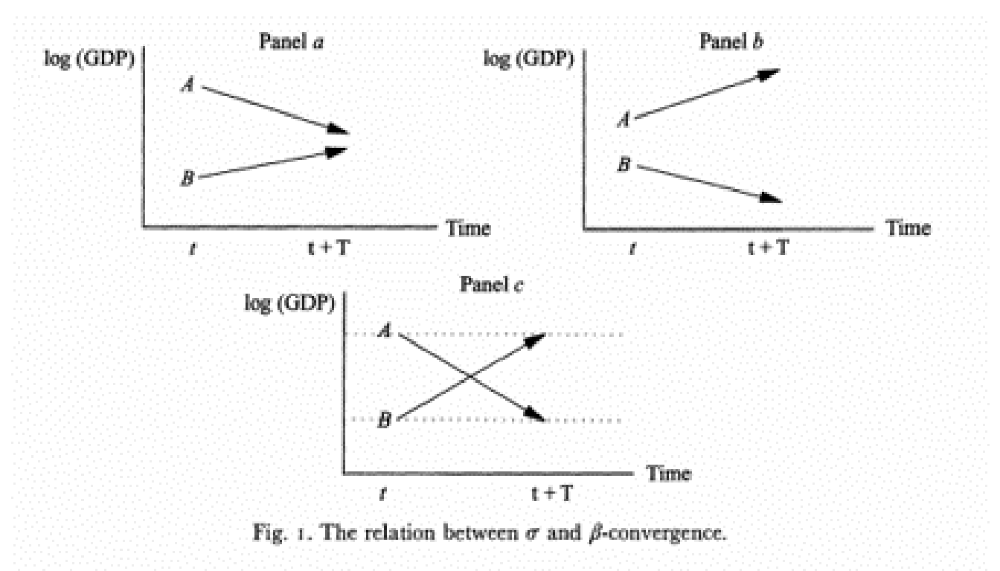
Conclusiones:
Para la OCDE:
Para el subconjunto de países desarrollados, existen los dos tipos de convergencia.
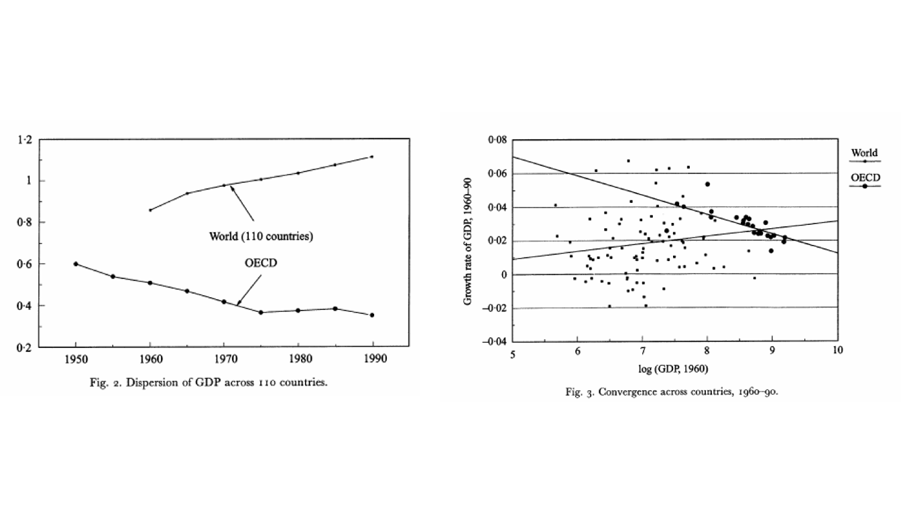
“What Remains of Cross-Country Convergence?” (Johnson, Papageorgious (JP); 2018; IMF):
Analizan el historial de crecimiento entre países en los últimos 50 años, examinando si los países en desarrollo han cerrado la brecha de ingreso per cápita con los de las economías desarrolladas. Concluyen que, como grupo, no lo han hecho.
Examinan la literatura sobre convergencia absoluta, con un énfasis particular en la última década. Con excepciones, la literatura apoya la conclusión de la falta de progreso en el cierre de la brecha de ingresos entre países desarrollados y en desarrollo.
“Everything You Know about Cross-Country Convergence Is (Now) Wrong” (Patel, Sandefur, Subramanian (PSS); 2018; Center for Global Development):
“What Remains of Cross-Country Convergence?” (Johnson, Papageorgious (JP); 2018; IMF):
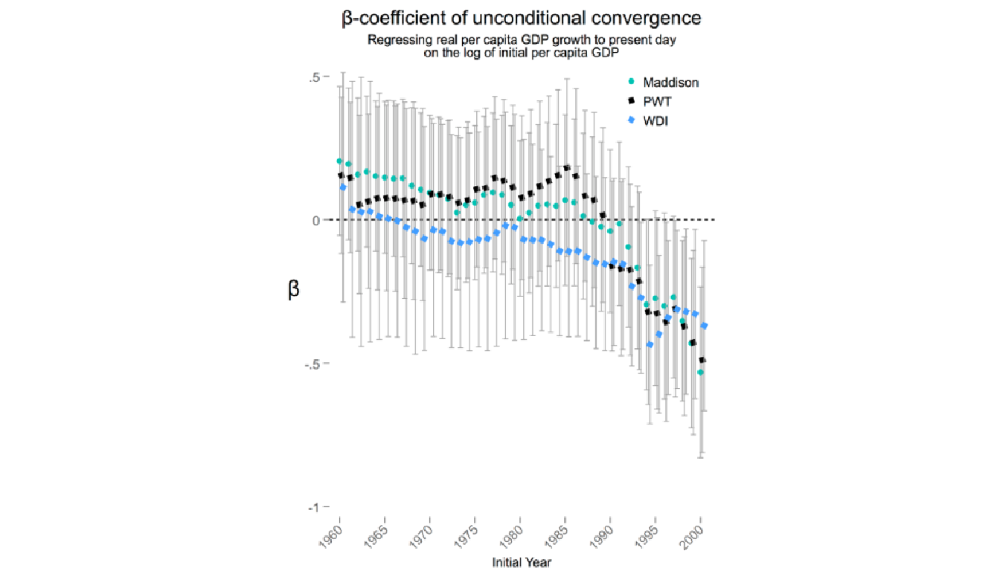
Comparación:
La diferencia en la publicación de PSS y el paper de JP es que PSS mira periodos de tiempo relativamente recientes. PSS analiza si los países que eran pobres en 1990 crecieron más rápido que los países ricos en 1990, de 1990 a 2014.
JP analiza periodos de tiempo más largos. Ellos encuentran que no hay mucha evidencia de que los países pobres en 1960 crecieron más rápido que los países ricos en 1960.
Esto no es una contradicción con el artículo de PSS porque este sólo indica que hace 25 años los países pobres comenzaron a crecer más rápido que los países ricos.
La implicación de este hallazgo es que los países pobres están convergiendo con el PIB per cápita de los países ricos, sin importar los por que o las causas de su pobreza o riqueza. Aunque la afirmación es defendible, no significa que se deba esperar que los países en desarrollo pronto se parezcan a Europa Occidental.
Velocidad de convergencia
\(\frac{Ln (y_t) - Ln (y_0)}{t}=\alpha + \beta Ln(y_0)\)
A la izquierda está la tasa de crecimiento del PIB per cápita, 𝑦, desde algún año inicial 0 hasta el año 𝑡. Esto está relacionado con el nivel inicial del PIB per cápita, \(𝑦_0\), en el lado derecho. La fuerza de esa relación se mide por el coeficiente \(\beta\).
La convergencia \(\beta\) significa que \(\beta<0\), o que la tasa de crecimiento disminuye a medida que aumenta el nivel inicial de ingresos. Qué tan grande (en valor absoluto) \(\beta\) determina qué tan fuerte es ese efecto. El parámetro extra α es una tasa de referencia.
Velocidad de convergencia
\(Ln (y_t)=\alpha t + (1+\beta t) Ln(y_0)\)
que es el nivel de PIB per cápita en el tiempo \(t\), dado el PIB inicial per cápita en el tiempo 0. El término multiplicativo \(\beta t\) es el efecto de la convergencia \(\beta\) en el tiempo.
Usando esto, aquí hay una pregunta que podríamos hacer. Dado que un país pobre tiene \(𝑦_0^{pobre}\), es solo el 10% del valor en un país rico, \(𝑦_0^{rico}\), ¿cuánto tiempo tomará (es decir, qué tan grande tiene que ser el coeficiente) antes de que \(𝑦_t^{pobre}\) sea el 90% del valor en el país rico, \(𝑦_t^{rico}\)? Dada la ecuación, esto sucederá en algún momento.
Aún agregando los shocks mencionados anteriormente que podrían seguir separando estos dos países, la convergencia \(\beta\) eventualmente garantizará lo anterior.
En este tiempo \(t\), queremos que \(\frac{𝑦_t^{pobre}}{𝑦_t^{rico}}= 0.9\)
Velocidad de convergencia
\(Ln (0.9)=\alpha t + (1+\beta t) Ln(y_0^{pobre})-(\alpha t + (1+\beta t) Ln(y_0^{rico}))\) - Lo que implica que:
\(Ln (0.9)=\alpha t + (1+\beta t) (Ln(y_0^{pobre})- Ln(y_0^{rico}))\)
\(Ln (0.9)=\alpha t + (1+\beta t) Ln (0.1)\)
\(t=\frac{\frac{Ln (0.9)}{Ln(0.1)}-1}{\beta}\)
Velocidad de convergencia
Convergencia condicional:
La literatura indica coeficientes de convergencia condicional de \(\beta=-0.02\). Esto significa que si observa solo grupos de países que tienen características similares (tasa de ahorro, niveles de capital humano, etc.), entonces encontrará convergencia \(\beta\) en esos grupos.
Pero a través de los grupos, no hay tendencia a la convergencia \(\beta\). Por ejemplo, si solo observara los países de la OCDE, vería una evidencia bastante fuerte de convergencia \(\beta\), con una estimación de \(\beta=-0.02\), aproximadamente. Y si solo observara el conjunto de países del África subsahariana, vería evidencia similar de convergencia \(\beta\).
Pero, no hay una tendencia a que los países africanos como grupo crezcan más rápido que los países de la OCDE. Solo que, dentro del grupo de países de la ASS, los más pobres crecen más rápido, y dentro del grupo de países de la OCDE, los más pobres crecen más rápido.
Convergencia condicional
Probablemente la convergencia \(\beta\) condicional o incondicional no representa algún tipo de verdad estructural sobre el crecimiento económico. Es mejor considerarlo como un resumen estadístico de la experiencia general de los países pobres en un marco de tiempo determinado.
Es decir:
Los resultados del PSS nos dicen que algo cambió alrededor de 1990, por lo que muchos países pobres crecieron más rápido que los países ricos, en comparación con el período comprendido entre 1960 y 1990. Pero no nos dice qué o por qué cambió, o si persistirá.
Eso no hace que el estimado de PSS sea falso. Es un buen resultado descriptivo que nos dice que debemos pensar un poco más acerca de lo que podría haber cambiado en esos años, incluso si la implicación de la convergencia β de ese período no es tan fuerte.
Convergencia condicional
Cabe destacar dos hechos más.
1. El análisis indica que la convergencia en el período reciente es una consecuencia de la mejora del crecimiento del PIB per cápita en los países pobres y la disminución del crecimiento en los países ricos.
Convergencia condicional
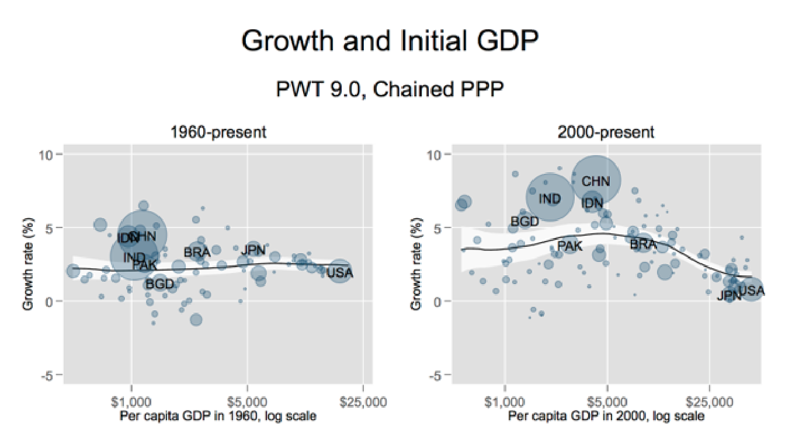
Convergencia condicional
Cabe destacar dos hechos más.
2 No hay señales de una “trampa de ingresos medios”.
Convergencia condicional
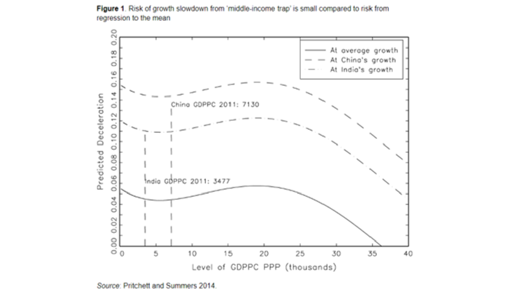
Convergencia regional en México
“Why Mexico’s regional income convergence broke down” (Chiquiar, 2005)
Las reformas comerciales de México llevaron a un patrón divergente en los niveles de producción per cápita regional.
Este documento incluye los patrones de crecimiento regional de México después de la promulgación de las reformas del GATT en la década de 1980 y explora qué factores pueden explicar este resultado.
Convergencia regional en México
“Why Mexico’s regional income convergence broke down” (Chiquiar, 2005)
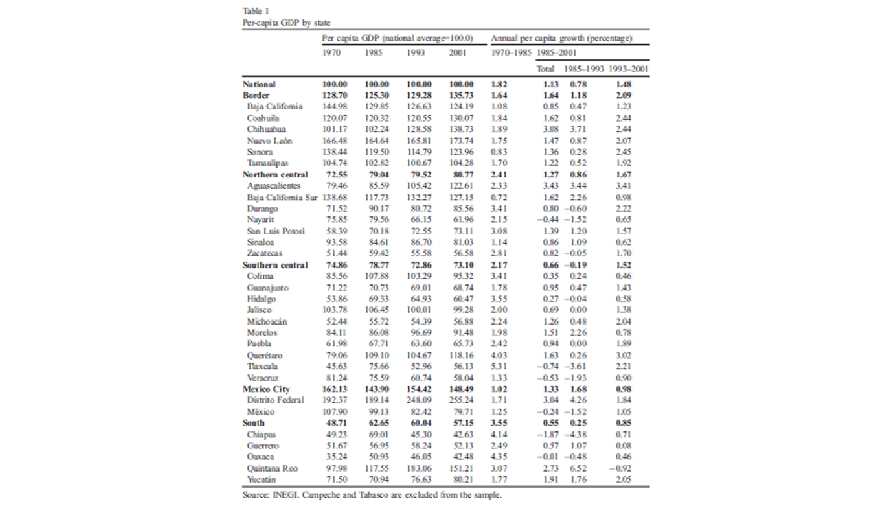
Convergencia regional en México
“Why Mexico’s regional income convergence broke down” (Chiquiar, 2005)
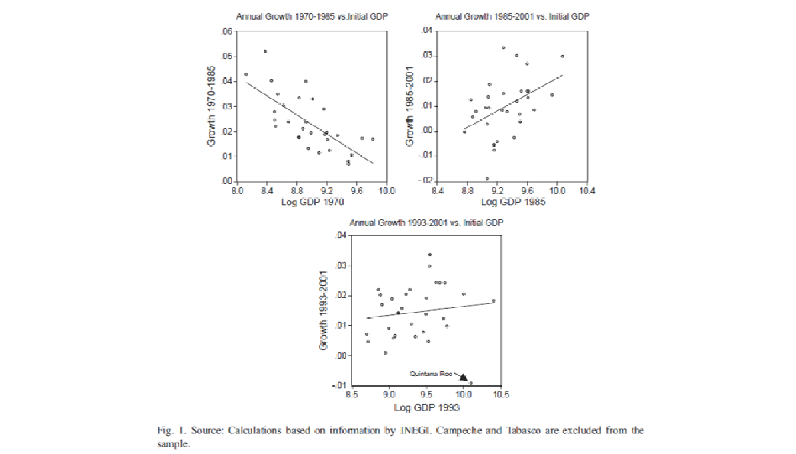
Convergencia regional en México
“Why Mexico’s regional income convergence broke down” (Chiquiar, 2005)
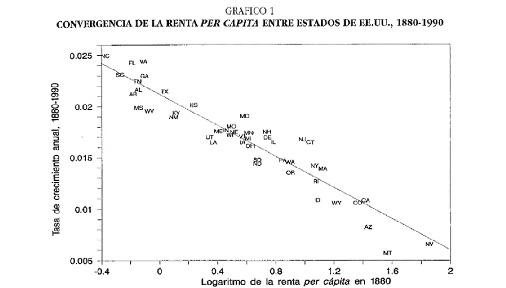
Convergencia regional en México
“Why Mexico’s regional income convergence broke down” (Chiquiar, 2005)
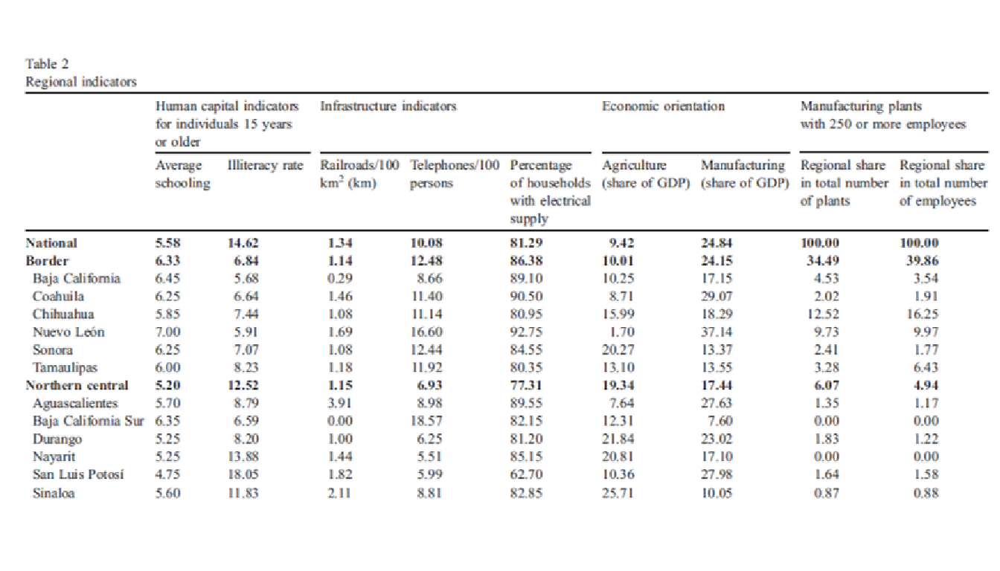
Convergencia regional en México
“Why Mexico’s regional income convergence broke down” (Chiquiar, 2005)
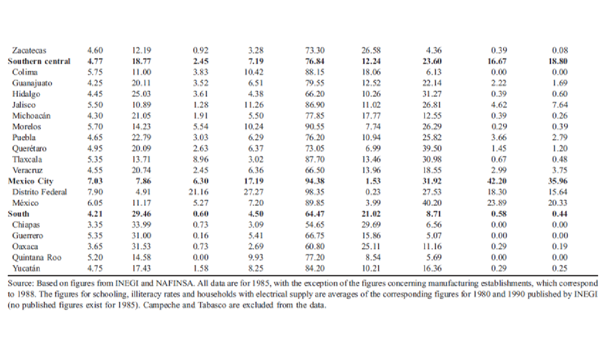
Convergencia regional en México
“Why Mexico’s regional income convergence broke down” (Chiquiar, 2005)
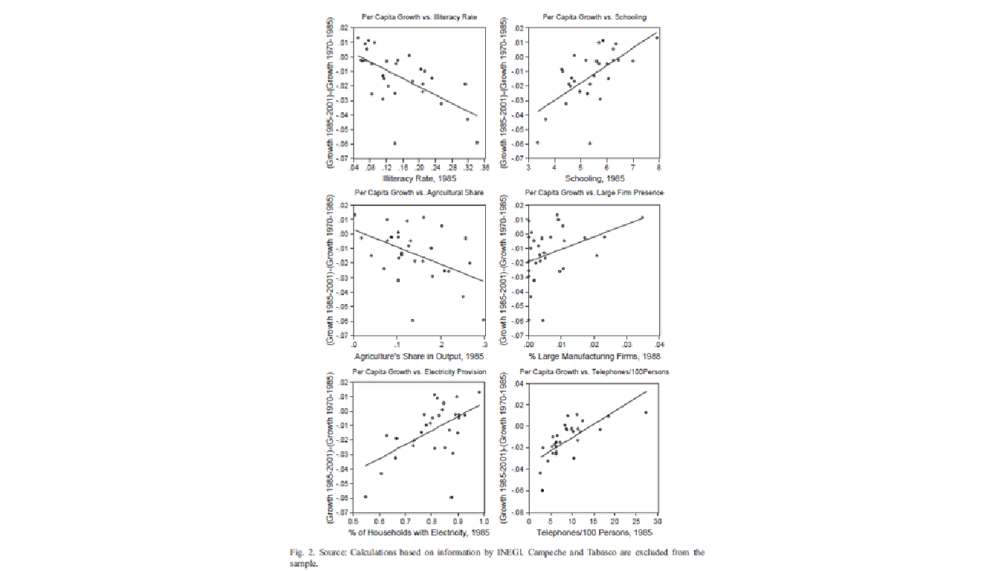
Convergencia regional en México
“Why Mexico’s regional income convergence broke down” (Chiquiar, 2005)
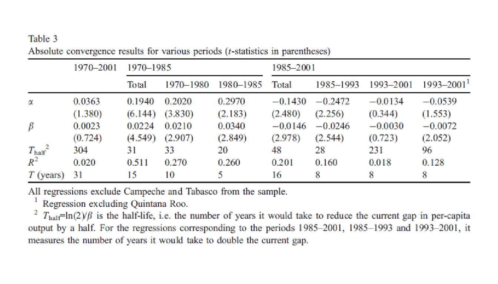
Convergencia regional en México
“Why Mexico’s regional income convergence broke down” (Chiquiar, 2005)
Conclusiones
Los resultados también sugieren que los ganadores de las reformas fueron aquellos Estados capaces de atraer mayores niveles de capital humano y físico, así como mejor infraestructura.
Este resultado no está peleado con el modelo de crecimiento neoclásico, ya que esta puede ser una dinámica transicional donde se da un cambio estructura, en este caso, las reformas comerciales de México.
Un resultado de las reformas es que aumentó la disparidad de ingreso per cápita regional ya que en las regiones cercanas a Estados Unidos tuvieron mayores beneficios de estas reformas porque tenían mayores niveles de capital humano, industrial, comunicaciones e infraestructura que pudieron aprovechar las reformas comerciales, en comparación a los Estados del sureste.
La conclusión es que temas de convergencia internacional, hace más sentido hablar de regiones económicas que de países.
Convergencia regional en México
“Convergencia Regional en México: 1994 - 2015” (Banco de México, 2017)
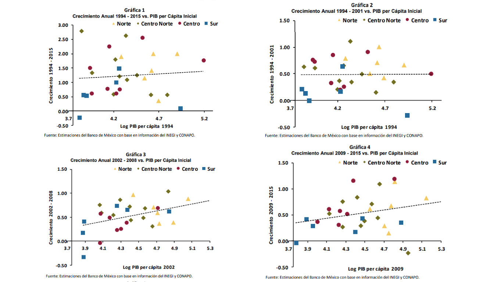
Convergencia regional en México
“Convergencia Regional en México: 1994 - 2015” (Banco de México, 2017)
Modelo: \((\frac{1}{t})Ln (y_{i,t})-Ln(y_{i,t-1})=\alpha + \beta Ln(y_{i,t-1}) + \delta_t + \epsilon_{i,t}\)
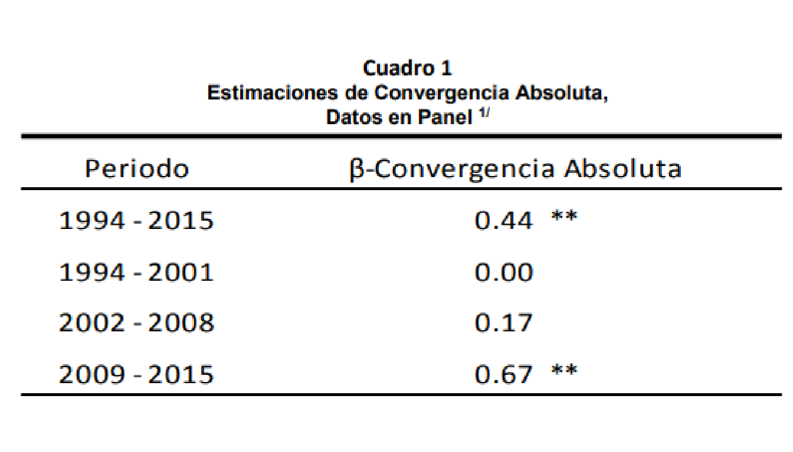
Convergencia regional en México
“Convergencia Regional en México: 1994 - 2015” (Banco de México, 2017)
En línea con la evidencia gráfica, la brecha de niveles de ingreso creció a un ritmo anual de 0.44% para el periodo analizado, reforzando la tesis de un patrón de divergencia absoluta.
Esto es explicable, según el modelo, debido al comportamiento del PIB regional en los años posteriores al 2008, como se puede apreciar en la no significancia de los coeficientes de la regresión.
Convergencia regional en México
“Convergencia Regional en México: 1994 - 2015” (Banco de México, 2017)
Ahondando en la explicación de Banco de México propone que la estructura económica, la dotación de capital humano, el nivel y la calidad de la infraestructura y el grado de desarrollo institucional influyan en el crecimiento económico.
Sustentando así que la divergencia regional no se explique por diferencias en factores estructurales.
Convergencia condicional
Modelo: \((\frac{1}{t})Ln (y_{i,t})-Ln(y_{i,t-1})=\alpha + \beta Ln(y_{i,t-1}) + \gamma X_{i,t-1}+\delta_t + \epsilon_{i,t}\)
Convergencia regional en México
“Convergencia Regional en México: 1994 - 2015” (Banco de México, 2017)
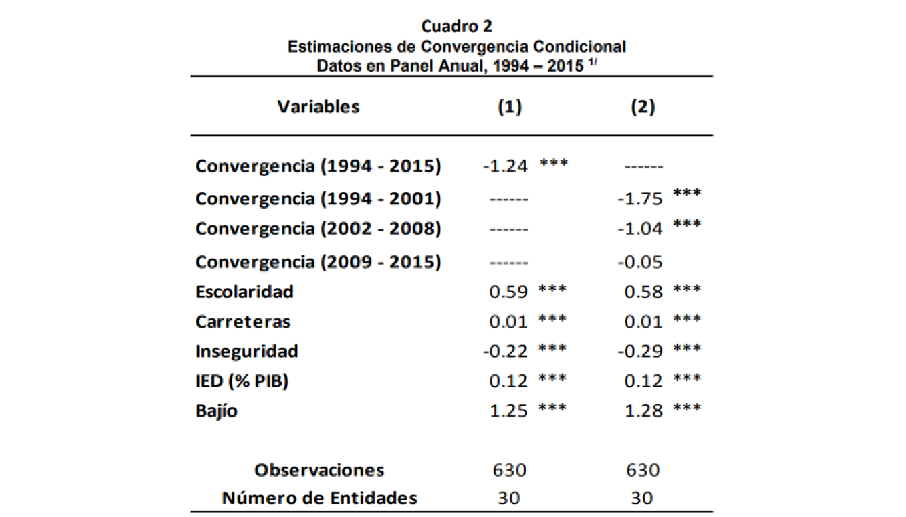
Convergencia regional en México
“Convergencia Regional en México: 1994 - 2015” (Banco de México, 2017)
Conclusiones
Las variables de control tienen el signo esperado y son estadísticamente significativas. El modelo indica que los estados con un mayor acervo de capital humano y físico, y con un mayor nivel de seguridad, tienen una mayor tasa de crecimiento del PPC.
A su vez la inversión extranjera directa tiene un impacto positivo sobre la tasa de crecimiento económico de las entidades, al estimular la productividad laboral y estar vinculada a la innovación tecnológica.
Concluyen que hay evidencia de convergencia condicional en el PIB per cápita entre las entidades federativas de México para el periodo 1994 – 2015, si bien esta se debilitó a partir del estallido de la crisis global. En dicho periodo parece haberse interrumpido el proceso de convergencia condicional.
Convergencia regional en Estados Unidos
“The new geography of jobs” (Moretti, 2012)
Moretti aborda la pregunta, ¿el lugar donde vives afecta cuánto ganas?
La respuesta es un sí rotundo. La unidad de análisis más relevante es la ciudad. Puede dividir, en términos generales, tanto las ciudades como los trabajos en dos grupos.
Los trabajos pueden ser innovadores, de alta productividad o simplemente regulares: trabajos de ingeniería de Silicon Valley contra trabajos tradicionales ya sea de alta habilidad como un abogado, o de baja habilidad como un peluquero o un trabajador de la construcción.
Las ciudades también están divididas: ciudades con estos sectores de vanguardia y aquellas sin ellos.
Convergencia regional en Estados Unidos
“The new geography of jobs” (Moretti, 2012)
¿De dónde viene la diferencia? En general, los salarios se ven afectados por la productividad.
Los sectores de vanguardia, que son los más productivos, tienen los salarios más altos. Pero hay una interacción entre la ubicación y el tipo de trabajo. Debido a que los trabajos de vanguardia tienden a agruparse en ciertas ciudades, hay muchos más tipos de profesionales con salarios altos en ellas.
Convergencia regional en Estados Unidos
“The new geography of jobs” (Moretti, 2012)
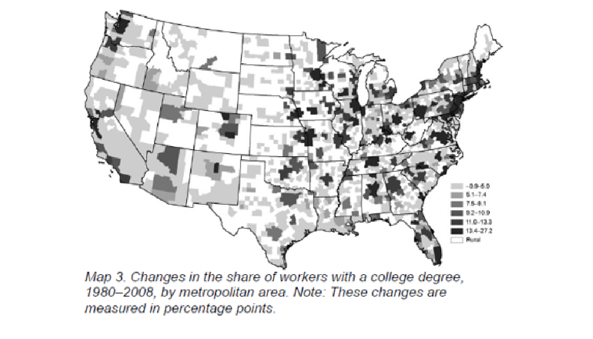
Convergencia regional en Estados Unidos
“The new geography of jobs” (Moretti, 2012)
La gran divergencia en Estados Unidos
En Estados Unidos, la divergencia se está dando derivado de un cambio estructural: de la industria manufacturera a la industria de TI.
Esta última utiliza mayor proporción de trabajadores educados
Convergencia regional en Estados Unidos
“The new geography of jobs” (Moretti, 2012)
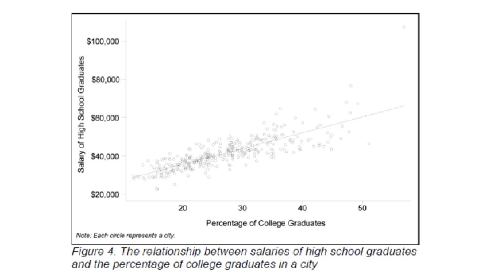
Convergencia regional en Estados Unidos
“The new geography of jobs” (Moretti, 2012)
La gran divergencia en Estados Unidos
Este cambio impulsa un mayor salario no sólo para los trabajadores con habilidades altas en estas ciudades, sino también para los trabajadores con habilidades bajas en las ciudades señaladas.
¿Cómo determinar los factores que promueven el crecimiento sostenido para los países pobres? ¿Cómo implementar políticas que aumenten o mantengan el crecimiento?
No existe una guía confiable sobre políticas apropiadas para promover el crecimiento. Hay análisis que asocian ciertas condiciones previas de una generación anterior con el crecimiento posterior, especialmente cuando no tienen en cuenta las diferencias de experiencias y circunstancias entre países.
¿Qué se ha hecho? Los economistas se han enfocado en estudiar:
Diagnósticos: ¿Necesarios o innecesarios (estorbosos)?
“There is only one poverty strategy: (broad based) growth” (Pritchett, 2019)
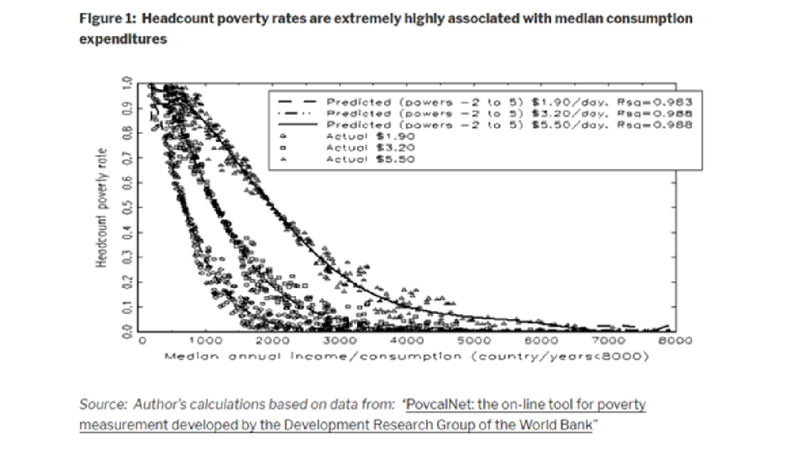
Diagnósticos: ¿Necesarios o innecesarios (estorbosos)?
“There is only one poverty strategy: (broad based) growth” (Pritchett, 2019)
“Casi todo”.
La R cuadrada de la mediana (tratada por no linealidad) para explicar la pobreza de personal considerando las tres líneas de pobreza es:
Diagnósticos: ¿Necesarios o innecesarios (estorbosos)?
“There is only one poverty strategy: (broad based) growth” (Pritchett, 2019)
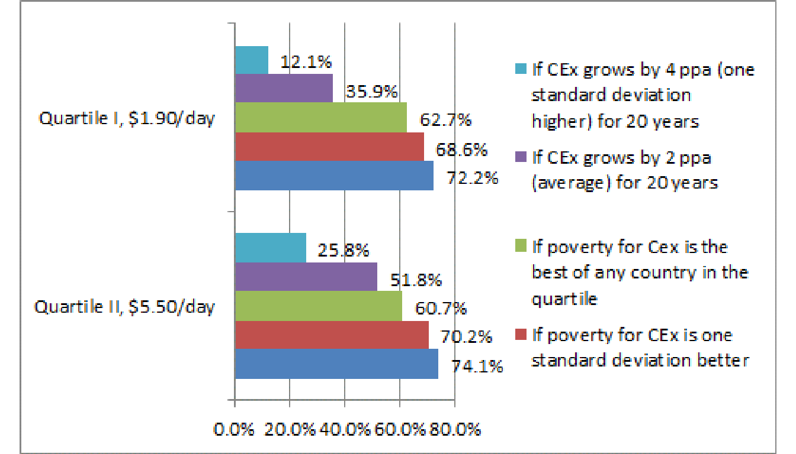
Diagnósticos: ¿Necesarios o innecesarios (estorbosos)?
“There is only one poverty strategy: (broad based) growth” (Pritchett, 2019)
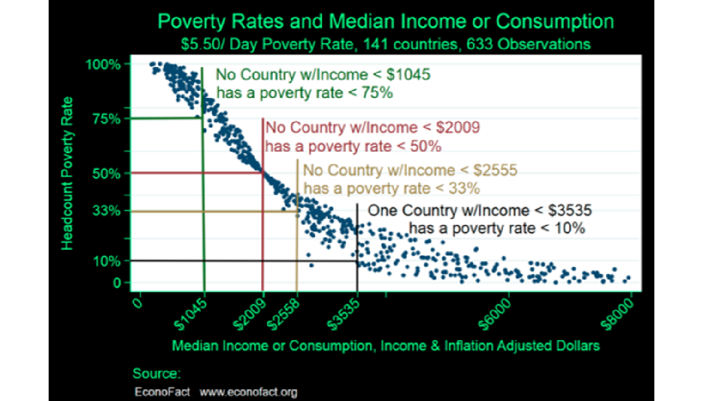
Diagnósticos: ¿Necesarios o innecesarios (estorbosos)?
“There is only one poverty strategy: (broad based) growth” (Pritchett, 2019)
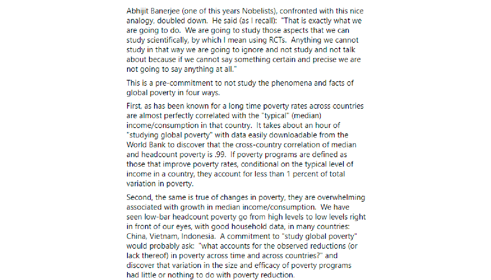
Magnitud de crecimiento de los países en desarrollo
Trillions Gained and Lost: Estimating the Magnitude of Growth Episodes (Pritchett, Sen, Kar, Raihan; 2014)
Proponen una técnica para medir la magnitud total de un episodio de crecimiento:
La magnitud de la ganancia o pérdida de un episodio de crecimiento combina:
\(Magnitud_F=Y_{t+N_{EP}}^{Actual} - Y_{t+N_{EP}}^{Contrafactual}\)
Magnitud de crecimiento de los países en desarrollo
Trillions Gained and Lost: Estimating the Magnitude of Growth Episodes (Pritchett, Sen, Kar, Raihan; 2014)
\(Magnitud_F=Y_{t+N_{EP}}^{Actual} - Y_{t+N_{EP}}^{Contrafactual}\)
Magnitud de crecimiento de los países en desarrollo
Trillions Gained and Lost: Estimating the Magnitude of Growth Episodes (Pritchett, Sen, Kar, Raihan; 2014)
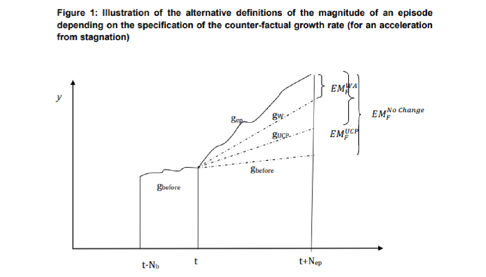
Magnitud de crecimiento de los países en desarrollo
Trillions Gained and Lost: Estimating the Magnitude of Growth Episodes (Pritchett, Sen, Kar, Raihan; 2014)
“¿Qué pueden hacer “exactamente” los países para iniciar un episodio de crecimiento sostenido (y no revertido posteriormente)? ¿Qué pueden hacer “exactamente” los países para evitar un período de estancamiento sostenido? ¿Qué pueden hacer “exactamente” los países para evitar una depresión?
No estamos respondiendo ninguna de estas preguntas aquí, mucho menos “exactamente”. Pero esperamos sentar las bases empíricas de la magnitud de los cambios de crecimiento y una clasificación que aclare y mida lo que se debe explicar”.
Magnitud de crecimiento de los países en desarrollo
Trillions Gained and Lost: Estimating the Magnitude of Growth Episodes (Pritchett, Sen, Kar, Raihan; 2014)
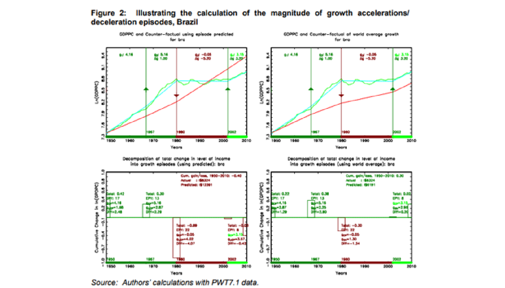
Aceleraciones y desaceleraciones de crecimiento
Trillions Gained and Lost: Estimating the Magnitude of Growth Episodes (Pritchett, Sen, Kar, Raihan; 2014)
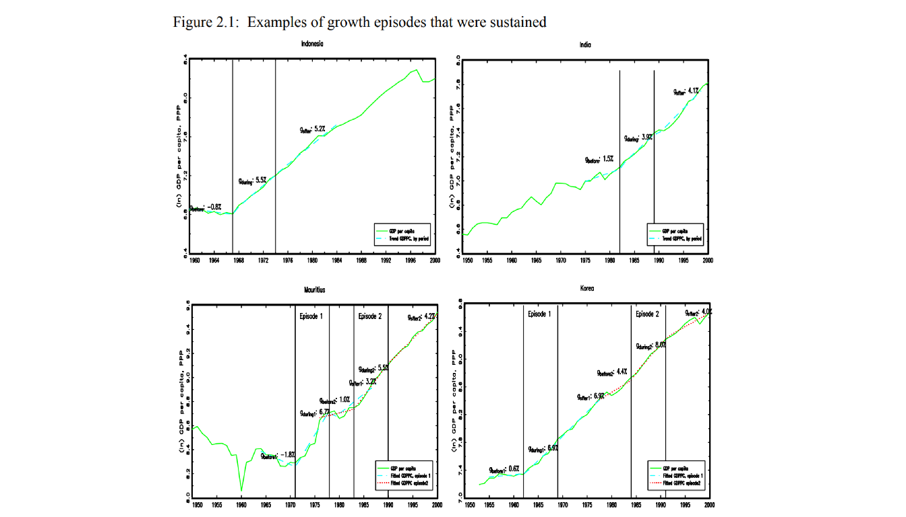
Aceleraciones y desaceleraciones de crecimiento
Trillions Gained and Lost: Estimating the Magnitude of Growth Episodes (Pritchett, Sen, Kar, Raihan; 2014)
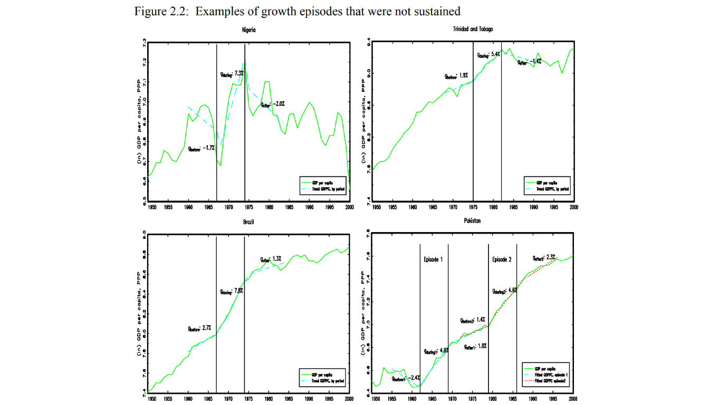
Aceleraciones y desaceleraciones de crecimiento
Trillions Gained and Lost: Estimating the Magnitude of Growth Episodes (Pritchett, Sen, Kar, Raihan; 2014)
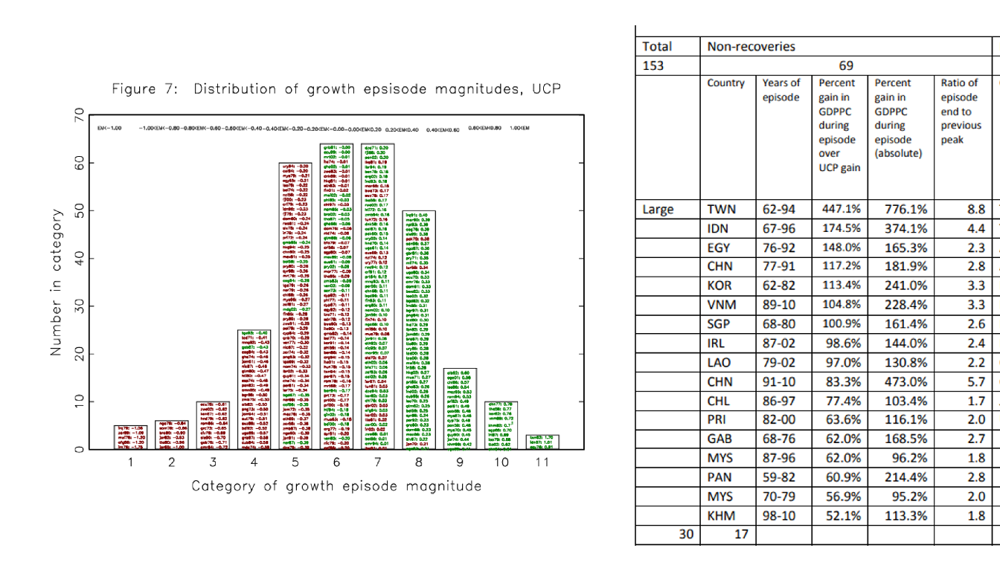
Aceleraciones y desaceleraciones de crecimiento
Trillions Gained and Lost: Estimating the Magnitude of Growth Episodes (Pritchett, Sen, Kar, Raihan; 2014)
Las aceleraciones del crecimiento son bastante frecuentes. 55% de los países han tenido al menos una aceleración en el período de 35 años entre 1957 y 1992. Sugiere que lograr un crecimiento rápido a mediano plazo no es algo que sea muy difícil y está al alcance de la mayoría de los países. Este es un antídoto útil para el pesimismo que a menudo impregna las discusiones políticas sobre el crecimiento.
La mayoría de las aceleraciones de crecimiento no están precedidas o acompañadas por cambios importantes en las políticas económicas, arreglos institucionales, circunstancias políticas o condiciones externas. En general, esos determinantes hacen un mal trabajo al predecir los puntos de inflexión. “Parece que las aceleraciones del crecimiento son causadas predominantemente por cambios idiosincráticos, y a menudo a pequeña escala”.
Aceleraciones y desaceleraciones de crecimiento
What Makes Growth Sustained? (Berg, Ostry, Zettelmeyer; 2005)
Los autores identifican interrupciones estructurales en el crecimiento económico en 140 países y las usan para definir “períodos de crecimiento”: períodos de alto crecimiento precedidos por una crisis y que terminan con una crisis o con el final de la muestra.
Metodología: Identifican interrupciones estructurales, definen los períodos de crecimiento y exploran los determinantes potenciales de la duración del crecimiento mediante la estimación de un modelo de riesgos proporcionales y variables económicas y políticas.
- Hallazgos:
Aceleraciones y desaceleraciones de crecimiento
What Makes Growth Sustained? (Berg, Ostry, Zettelmeyer; 2005)
Los autores crean un conjunto de datos con información sobre las depresiones económicas en diversos países.
Definen una depresión como una disminución acumulativa del 20% o más en la producción per cápita que dura al menos tres años.
Los episodios de depresión son muy comunes en la historia reciente y tienden a seguir períodos de alto crecimiento.
Aceleraciones y desaceleraciones de crecimiento
What Makes Growth Sustained? (Berg, Ostry, Zettelmeyer; 2005)
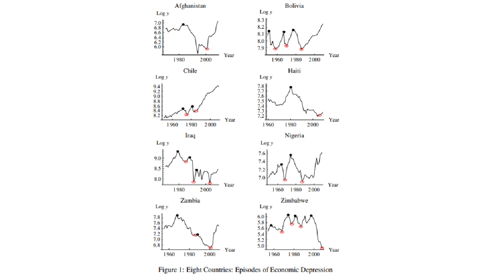
Aceleraciones y desaceleraciones de crecimiento
Economic Depression in the World (Breuer, McDermott; 2011)
Hallazgos:
Diagnósticos de crecimiento
Growth Diagnostics (Hausmann, Rodrick, Velasco; 2004)
Los autores desarrollan un marco para el diagnóstico del crecimiento: una estrategia para analizar y formular políticas de crecimiento que sean tanto operativas como basadas en un sólido razonamiento económico.
La clave: comprender cómo las restricciones vinculantes para la actividad económica difieren de un entorno a otro. Este entendimiento se puede utilizar para derivar las prioridades políticas en consecuencia, de una manera que utilice eficientemente el escaso capital político de los reformadores.
Consideraciones: Las estrategias de reforma deben estar dirigidas principalmente a elevar las tasas de crecimiento, es decir, deben ser estrategias de crecimiento. Es probable que las estrategias de crecimiento difieran según las oportunidades y limitaciones internas. Es improbable que se proponga una estrategia de crecimiento idéntica para todos los países, independientemente de sus circunstancias.
Las estrategias de crecimiento requieren un sentido de prioridades.
Diagnósticos de crecimiento
Growth Diagnostics (Hausmann, Rodrick, Velasco; 2004)
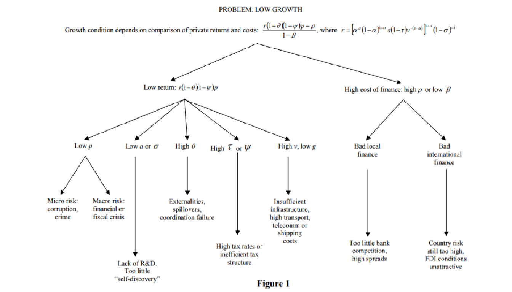
Diagnósticos de crecimiento
Growth Diagnostics (Hausmann, Rodrick, Velasco; 2004)
Hallazgos:
Las estrategias que se centran en la movilización de recursos a través del financiamiento externo y el aumento del ahorro interno son exitosas cuando los rendimientos internos son altos y privados.
Las estrategias que se centran en la liberalización del mercado y la apertura funcionan mejor cuando los beneficios sociales son altos y el obstáculo más grande para su apropiación privada son los impuestos y las restricciones impuestas por el gobierno.
Las estrategias que enfatizan la política industrial son apropiadas cuando los rendimientos privados están deprimidos, no por los errores de comisión del gobierno (lo que hace), sino por sus errores de omisión (lo que no hace).
Diagnósticos de crecimiento
“Growth slowdowns: Middle-income trap vs. regression to the mean” (Pritchett, Summers, 2014)
Implicaciones en política pública: Etiquetar el problema de mantener el crecimiento como la “trampa de ingresos medios“ sugiere que:
El riesgo de una desaceleración del crecimiento es mucho más controlable por la política de lo que realmente es.
Puede haber una idea equivocada de prioridades en política pública (impulsar industrias de vanguardia antes de resolver los “problemas del siglo XIX”).
El crecimiento acelerado supone un proceso de destrucción creativa, difícil de aplicar en economías establecidas, donde las industrias se enfocan en el funcionamiento y no en la innovación.
El reto de crecimiento sostenido es para todos los países y no sólo para los países de ingresos medios.
Cálculo de efectos
Los países utilizan políticas públicas para mejorar el crecimiento económico, entre otros fines. Hay dos formas de impulsar el crecimiento del PIB. Ya sea:
Aumentar activamente el PIB real a través del aumento del gasto en algún sector de la economía.
Gasto en infraestructura.
Cálculo de efectos
Las políticas públicas aumentan el PIB potencial, no el PIB real, abriendo una brecha entre estos dos. ¿Por qué?
Para dar una idea de lo poco que un efecto de las políticas públicas en el crecimiento, utilicemos la siguiente ecuación: \(y_t=(1+g)^t[\lambda^t y_0^* + (1-\lambda^t)y_0]\)
En donde:
Despejando:
\(\frac{y_{t+1}-y_t}{y_t}=(1+g)[\lambda \frac{y_t^*}{y_t}+(1-\lambda)]-1\)
Cálculo de efectos
Asumiendo:
\(\frac{y_{t+1}-y_t}{y_t}=(1+0.02)[0.02 \frac{17}{16}+(1-0.02)]-1=2.13\)
Suponiendo la aplicación de una política pública efectiva, que incremente en 1 trillón el PIB potencial, entonces la tasa de crecimiento de la economía será: \(\frac{y_{t+1}-y_t}{y_t}=(1+0.02)[0.02 \frac{18}{16}+(1-0.02)]-1=2.25\)
0.12 puntos porcentuales mayor en el periodo.
¿Esto es mucho o es poco?
El efecto depende de la política pública, de su trascendencia y su efecto en el largo plazo.
Cálculo de efectos
La mayoría de las políticas públicas no tendrá un impacto directo en el PIB de un periodo a otro, pero una serie de políticas públicas en el tiempo pueden articularse en reformas estructurales consistentes en el tiempo, teniendo un impacto mayor, o abriendo la brecha entre el PIB potencial y el real.
Pero ninguna reforma hará una diferencia realmente apreciable para el crecimiento económico de un año a otro.
Un país puede revolucionar la educación, los impuestos corporativos, la planificación urbana o la inmigración, pero los beneficios que esos cambios inducen probablemente tardarán décadas en manifestarse.
Por otro lado, un incremento en el gasto público o de los hogares aumentará el PIB real de un año a otro. No da para decisiones marginales. Esa es la única forma de aumentar considerablemente la tasa de crecimiento a corto plazo. ¿Es lo deseable? No:
Cálculo de efectos